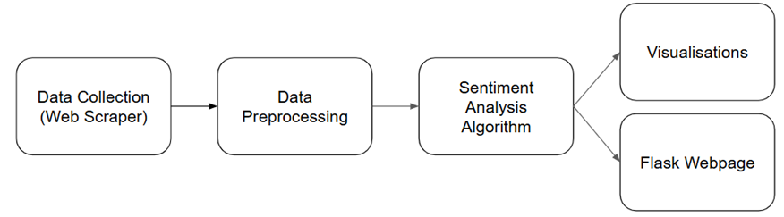

Intro
This is a Programming Fundamentals project analyzing airline customer reviews to determine sentiment patterns and insights.
About
The project investigates how customer sentiment compares to the official Skytrax Top 10 Airline Rankings, using Natural Language Processing (NLP) to extract insights from over 13,000 online reviews. It identifies emotion “hotspots” in text using Sliding Window Analysis, Kadane’s Algorithm, and Word Segmentation (DP-based) techniques Additionally it:
- Classifies reviews as positive or negative 😊😐😞
- Extracts key topics and themes from reviews 🔍
- Visualizes insights through a Flask-based dashboard 📊
- Provides insights for airline service improvement 📈
Technology Stack
A Python-based NLP pipeline was developed for data scraping, preprocessing, sentiment computation, and visualization. The lexicon-based model (AFINN-en-165) achieved ~80% accuracy, with high recall and consistent performance. Results are displayed on an interactive Flask web interface, enabling airline-specific sentiment tracking.
Data Pipeline:
- Scrape airline reviews (using requests + BeautifulSoup)
- Clean and preprocess data (tokenization, normalization, de-duplication)
- Compute sentiment using modular Python functions
- Visualize rankings and insights via Flask
Data Flow Diagram
Results Dashboard
Results
- Hainan Airlines ranked #1 in sentiment vs #10 in Skytrax.
- Qatar Airways and Singapore Airlines dropped in sentiment rankings.
- Strong correlation found between service consistency and positive sentiment.
- Frequent negative keywords: delay, baggage, service.
- Frequent positive keywords: comfort, crew, experience.
Implementation
Developed collaboratively in Python using Jupyter Notebook for prototyping and modular .py scripts for production. Visualization and user interaction were handled via Flask + Bootstrap.
Technologies Used
Libraries & Frameworks
- Python
- Pandas (data manipulation)
- NLTK (natural language processing)
- Matplotlib (data visualization)
- Matplotlib / Seaborn
- Flask (web framework)
- VADER Sentiment Analyzer
- NumPy
- HTML/CSS/JavaScript (frontend)
Tools & Platforms
- Jupyter Notebook
- Git & GitHub
- Flask (Web App)
Acknowledgements
Developed together with groupmates (Darryl, Shermaine, Derrick, & Jordan) under the guidance of Prof. Zhang Zhengchen
& Prof. Eric Lam as part of SIT's Programming Fundamentals module. Special thanks to the open-source community for providing powerful NLP tools and documentation.

References
- Github: https://github.com/DyanelLancea/Airline-Review-Sentiment-Analysis
- Scikit-learn Documentation. [Online] Available: https://scikit-learn.org/
- NLTK Documentation. [Online] Available: https://www.nltk.org/